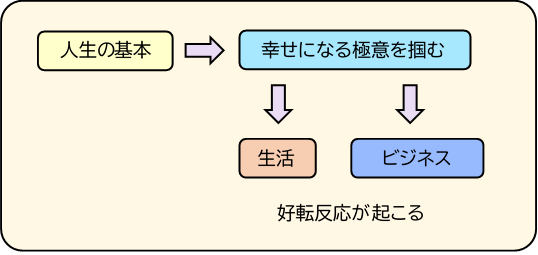

東洋思想応用学 基本論
テキスト全体：計算待ち第1章：全体の概要
東洋的考え方②
タイトルをクリックすると、詳しい内容が開きます。
このページの学習状況
0%
完了 0 / 2 節
まず自分が幸せでないと、人を幸せにすることはできない。
自分を大切にすることは、わがままになることではありません。自分の心に余裕がなければ、相手を思いやることが難しくなる場合があります。自分の状態を整えることは、周囲の人を大切にするための第一歩です。
東洋的な考え方では、自分と周囲を切り離して考えるのではなく、互いに影響し合うものとして捉えます。自分の心や行動は、家族や友人、職場の人など、周囲との関係にも影響します。
補足：
自分を大切にすることと、自分の都合だけを優先することは違います。自分の気持ちを尊重しながら、相手の立場や気持ちにも目を向ける。その両方を大切にすることが、ここでいう「自分の幸せから始める」という考え方です。
自分を大切にすることと、自分の都合だけを優先することは違います。自分の気持ちを尊重しながら、相手の立場や気持ちにも目を向ける。その両方を大切にすることが、ここでいう「自分の幸せから始める」という考え方です。
東洋の考え方を実践していた江戸時代。
江戸時代の社会
東洋の考え方を実践していた江戸時代。世界一犯罪が少なく、当時のGDPが世界一で、豊かで平和な国を保っていたと言われています。縄文時代から続く流れ
この流れは縄文時代から受け継がれたものと考えられます。縄文時代は約一万年続き、戦争をした痕跡がないとされています。また、言い伝えでは、大人も子供も皆が平等な社会だったといいます。補足：江戸時代の平和や経済の豊かさ、縄文時代の戦争の少なさや社会の平等性については、研究や解釈によって見方が異なります。縄文時代の人骨を調べた研究では、暴力による死亡の割合が低かったことが示されていますが、戦争がまったくなかったことや、誰もが平等だったことを断定できるわけではありません。歴史を一つの見方だけで捉えず、人々がどのように共に暮らしてきたのかを考えることが大切です。
